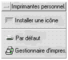

Utilisation du Tableau de bord
Le Tableau de bord est une fenêtre spéciale du Bureau contenant un ensemble d'icônes permettant d'effectuer des tâches courantes. Il vous accompagne lorsque vous changez d'espace de travail.
Connaissances de base du Tableau de bord70 |
Aperçu du Tableau de bord75 |
Personnalisation du Tableau de bord81 |
Personnalisation des espaces de travail85 |
Éléments du Tableau de bord
Les deux principaux éléments sont le Tableau de bord et les panneaux secondaires. Le Tableau de bord comprend le sélecteur d'espace de travail.
Tableau de bord
Le Tableau de bord correspond à la fenêtre horizontale affichée en bas de l'écran.
Il comporte un certain nombre d'icônes utilisées régulièrement, y compris le sélecteur d'espace de travail, qui contient des boutons permettant de passer à d'autres espaces.
Lorsque vous cliquez dessus, de nombreuses icônes du Tableau de bord lancent des applications — par exemple, les icônes Gestionnaire de fichiers et Gestionnaire de configuration.
Certaines icônes sont des zones de pose — par exemple, les icônes Imprimante et Corbeille. Vous pouvez faire glisser un fichier du Gestionnaire de fichiers ou du Gestionnaire d'applications vers l'icône.
Certaines icônes, telles que l'horloge et le témoin d'activité sont des indicateurs qui vous renseignent sur l'état du système. D'autres remplissent deux fonctions : par exemple les icônes Agenda et Courrier sont à la fois des indicateurs (affichant respectivement la date du jour et l'arrivée d'un nouveau courrier) et des boutons de lancement d'applications.
Panneaux secondaires
Une flèche est située au-dessus d'une icône du Tableau de bord indique que cette dernière possède un panneau secondaire.
Les panneaux secondaire contiennent au moins:
une icône Installer une icône, qui permet de personnaliser le panneau secondaire.
une copie libellée de l'icône du Tableau de bord.
Le sélecteur d'espace de travail
Le sélecteur d'espace de travail contient les boutons permettant de passer d'un espace de travail à l'autre. Il comporte également un certain nombre d'icônes.
Chaque espace de travail occupe l'ensemble de l'écran, comme si ce dernier comportait différentes couches. Les espaces de travail augmentent la surface d'affichage globale des fenêtres.
Connaissances de base du Tableau de bord
La présente section recouvre les connaissances de base nécessaires à l'utilisation des icônes du Tableau de bord et des panneaux secondaires.
Activation d'une icône du Tableau de bord
Cliquez une ou deux fois sur l'icône.
Certaines icônes — telles que l'Horloge et le Témoin d'activité restent inactives lorsque vous cliquez dessus.
Ouverture d'un panneau secondaire
Une flèche située au-dessus d'une icône indique que celle-ci possède un panneau secondaire.
Cliquez sur la flèche située au-dessus de l'icône.

Fermeture d'un panneau secondaire
Si vous ne l'avez pas déplacé, le panneau secondaire se ferme automatiquement lorsque vous sélectionnez une icône.
Cliquez sur l'icône Flèche du panneau secondaire.
Ou cliquez deux fois sur le bouton situé dans le coin supérieur gauche du panneau secondaire.
Menus instantanés du Tableau de bord
Chaque icône du Tableau de bord correspond à un menu instantané distinct.
Affichage du menu instantané du Tableau de bord
Déplacez le pointeur de la souris sur l'icône.
Appuyez sur le bouton droit de la souris et maintenez-le enfoncé.
Contenu des menus instantanés
Le contenu des menus instantanés dépend du comportement de l'icône et de son emplacement.
Icônes du Tableau de bord
Si l'icône lance une application, la première option du menu est une commande de lancement de l'application. Sélectionner cet élément équivaut à cliquer sur l'icône.
De plus, le menu instantané peut comporter les options suivantes :
Ajouter un panneau secondaire |
Ajoute un panneau secondaire à l'icône. |
Supprimer un panneau secondaire |
Supprime un panneau secondaire et son contenu. |
Aide |
Affiche l'aide Sur l'élément de l'icône. |
Zone de commutation
Il s'agit de la partie du sélecteur d'espace de travail inoccupée par des icônes ou des boutons d'espaces de travail.
Le menu instantané de la zone de commutation propose les options suivantes:
Ajouter un espace de travail |
Ajoute un espace de travail et crée un bouton d'espace de travail dans le sélecteur. |
Aide |
Affiche l'aide du sélecteur d'espace de travail |
Boutons d'espaces de travail
Utilisez ces boutons pour changer d'espace de travail. Chaque bouton correspond à son propre menu.

Le menu instantané du bouton d'espace de travail propose les options suivantes:
Ajouter un espace de travail |
Ajoute un espace de travail à votre liste. |
Supprimer |
Supprimer l'espace de travail. |
Renommer |
Transforme le bouton en zone de texte éditable. |
Aide |
Affiche l'aide du sélecteur d'espace de travail |
Icônes du panneau secondaire
Les menus instantanés des icônes des panneaux secondaires comportent une option permettant de les transformer en icônes du Tableau de bord en cours.
Le menu instantané des icônes de panneau secondaire comporte les options suivantes:
Copier dans le panneau principal |
Duplique l'icône du Tableau de bord et remplace celle en cours. |
Supprimer |
Supprime l'icône du panneau secondaire. |
Aide |
Affiche l'aide Sur l'élément de l'icône. |
Aide du Tableau de bord
Vous pouvez obtenir de l'aide sur:
les icônes,
l'utilisation et la configuration du Tableau de bord.
Aide sur une icône du Tableau de bord
Sélectionnez Aide dans le menu instantané de l'icône.
Ou:
Affichez le panneau secondaire Aide.
Cliquez sur l'icône Aide sur l'élément.
Le pointeur change de forme.
Cliquez sur l'icône au sujet de laquelle vous souhaitez de l'aide.
Aide sur l'utilisation et la configuration du Tableau de bord
Affichez le panneau secondaire Aide.
Cliquez sur l'icône Aide du Tableau de bord.
L'utilitaire d'affichage de l'aide apparaît et affiche le volume d'aide du Tableau de bord.
Déplacement du Tableau de bord ou d'un panneau secondaire
Les panneaux secondaires se déplacent comme les autres fenêtres — en faisant glisser la barre de titre.
Faites glisser le Tableau de bord à l'aide des poignées de déplacement.
Réduction du Tableau de bord
Le Tableau de bord peut être réduit à l'état d'icône.
Cliquez sur le bouton de réduction du Tableau de bord.
L'icône de la fenêtre du Tableau de bord porte le nom de l'espace de travail.
Aperçu du Tableau de bord
Cette section présente le contenu du Tableau de bord et des panneaux secondaires:
Panneau secondaire Applications personnelles
Panneau secondaire Imprimantes personnelles
Panneau secondaire Aide
Vous pouvez ajouter d'autres icônes sur le Tableau de bord ou y remplacer les icônes existantes.
Tableau de bord
Le Tableau de bord correspond à la fenêtre horizontale affichée au bas de l'écran.
Le Tableau 4‐1
|
|
|
| |
Horloge |
Sans effet |
Sans effet |
Heure du jour | |
Agenda |
Lance l'application Agenda |
La pose d'un fichier de rendez-vous ajoute ce dernier à l'agenda |
Date du jour | |
Gestionnaire de fichiers |
Ouvre une vue du Gestionnaire de fichiers de votre dossier personnel |
La pose d'un dossier ouvre une vue du Gestionnaire de fichiers de ce dossier |
Sans effet | |
Applications personnelles (Editeur de texte) |
Lance l'Editeur de texte. |
Ouvre le fichier dans une nouvelle fenêtre de l'Editeur de texte. |
Sans effet | |
Courrier |
Lance l'application Courrier |
Ouvre le contenu du fichier dans la fenêtre Nouveau message du programme Courrier |
Change d'aspect lors de l'arrivée d'un message | |
Verrouillage |
Verrouille l'écran et le clavier. Entrez votre mot de passe pour déverrouiller le système. |
Sans effet |
Sans effet | |
Sélecteur d'espace de travail |
Change d'espace de travail |
Sans effet |
Indique l'espace de travail courant | |
Témoin d'activité |
Sans effet |
Sans effet |
Clignote lorsque le système exécute une action | |
Imprimante (par défaut) |
Affiche l'état de l'imprimante par défaut |
Imprime le fichier sur l'imprimante |
Sans effet | |
Quitter |
Déconnexion de la session en cours |
Sans effet |
Sans effet | |
Gestionnaire de configuration |
Ouvre le Gestionnaire de configuration |
Sans effet |
Sans effet | |
Gestionnaire d'applications |
Ouvre une fenêtre du Gestionnaire d'applications |
Sans effet |
Sans effet | |
Gestionnaire des informations |
Ouvre une fenêtre Liste des livres énumérant les bibliothèques d'informations disponibles. |
L'action de relâcher une icône Bibliothèque d'informations ouvre une fenêtre Liste des livres pour cette bibliothèque d'informations. |
Aucune |
|
 |
Corbeille |
Ouvre la fenêtre de la Corbeille. |
Déplace le fichier dans la Corbeille. |
Aspect différent lorsque la Corbeille est vide ou non. |
Panneau secondaire Applications personnelles
Utilisez ce panneau secondaire pour les applications fréquemment utilisées. Les applications par défaut sont l'Éditeur de texte, le Terminal et l'Éditeur d'icônes.
Sans effet
Installe une icône déplacée à partir du Gestionnaire de fichiers ou d'applications dans ce panneau secondaire
Sans effet
Editeur de texte (double de l'icône du Tableau de bord)
Lance l'Editeur de texte
Ouvre le fichier dans une nouvelle fenêtre de l'Editeur de texte
Sans effet
Terminal
Lance l'émulateur de terminal
Sans effet
Sans effet
Editeur d'icônes
Lance l'Editeur d'icônes
Ouvre un fichier bitmap ou pixmap dans une nouvelle fenêtre de l'Editeur d'icônes
Sans effet
Panneau secondaire Imprimantes personnelles
Utilisez ce panneau secondaire pour des imprimantes fréquemment utilisées.
Sans effet
Installe une icône déplacée à partir du Gestionnaire de fichiers ou d'applications dans ce panneau secondaire
Sans effet
Imprimante par défaut (double de l'icône du Tableau de bord)
Affiche l'état des travaux sur l'imprimante par défaut
Imprime le fichier sur l'imprimante par défaut ou sur une autre imprimante
Sans effet
Gestionnaire d'impression
Lance le Gestionnaire d'impression
Imprime le fichier sur l'imprimante par défaut
Sans effet
Panneau secondaire Gestionnaire des informations
Le panneau secondaire Gestionnaire des informations vous permet d'accéder au Gestionnaire des informations, à l'Introduction au Bureau, aux volumes d'aide du Tableau de bord, au Gestionnaire d'aide et à l'aide sur un élément spécifique.

|
|
|
| |
Installer icône |
Aucun |
Installe une icône déplacée à partir du Gestionnaire de fichiers ou du Gestionnaire d'applications vers le panneau secondaire. |
Aucun | |
Gestionnaire des informations (double de l'icône du panneau principal) |
Ouvre une fenêtre Liste des livres énumérant les bibliothèques d'informations disponibles. |
L'action de relâcher une icône Bibliothèque des informations ouvre une fenêtre Liste des livres pour cette bibliothèque d'informations. |
Aucun | |
Introduction au Bureau |
Affiche le volume d'aide “Introduction au Bureau” |
Aucun |
Aucun | |
Aide du Tableau de bord |
Affiche le volume d'aide du Tableau de bord. |
Aucun |
Aucun | |
Gestionnaire d'aide |
Ouvre une fenêtre de visualisation de l'aide affichant le niveau supérieur des informations d'aide. |
L'action de relâcher un fichier de volume maître (*.sdl) ouvre le volume d'aide en question. |
Aucun | |
Aide sur un élément |
Propose une aide relative à un élément spécifique du Tableau de bord. Cliquez sur ce dispositif de contrôle, puis cliquez sur l'élément au sujet duquel vous souhaitez obtenir de l'aide. |
Aucun |
Aucun |
Personnalisation du Tableau de bord
Il existe deux types de personnalisation du Tableau de bord:
Personnalisation rapide
Il s'agit de la personnalisation réalisable à l'aide de l'interface du Bureau et qui comprend:
l'ajout d'icônes aux panneaux secondaires
l'échange d'icônes entre le Tableau de bord et les panneaux secondaires
l'ajout de panneaux secondaires
l'ajout et la suppression d'espaces de travail
la modification du nom des espaces de travail
Personnalisation avancée
Il s'agit de la personnalisation exigeant la création ou l'édition du fichier de configuration du Tableau de bord. Pour plus de détails, reportez-vous au manuel
Bureau CDE - Guide de l'administrateur .
Ajout d'une icône du panneau secondaire au Tableau de bord
Positionnez le pointeur de la souris sur l'icône du panneau secondaire à placer dans le Tableau de bord.
Sélectionnez l'option “Copier dans le panneau principal”du menu instantané de l'icône.
Ajout d'une application ou d'une autre icône dans un panneau secondaire
Toute icône du Gestionnaire de fichiers ou du Gestionnaire d'applications peut être ajoutée au Tableau de bord. Toutefois, vous utiliserez préférentiellement des icônes d'application.
Affichez l'icône de l'objet dans le Gestionnaire de fichiers ou dans le Gestionnaire d'applications.
Affichez le panneau secondaire auquel l'icône doit être ajoutée.
Faites glisser l'objet vers l'icône Installer une icône et posez-le sur l'icône.
Fonctionnement des icônes installées
Le comportement d'une icône ajoutée au Tableau de bord dépend du type de l'icône.
Type d'icône installée | Comportement |
Fichier |
Même comportement que l'icône du fichier dans le Gestionnaire de fichiers. |
Dossier |
Ouvre une vue du dossier dans le Gestionnaire de fichiers. |
Groupe d'applications |
Ouvre une vue du groupe d'applications dans le Gestionnaire d'applications. |
Icône d'application |
Même comportement que l'icône de l'application dans le Gestionnaire de fichiers ou le Gestionnaire d'applications. |
Ajout ou suppression de panneaux secondaires
Toute icône du Tableau de bord peut comporter un panneau secondaire.
Ajout d'un panneau secondaire
Amenez le pointeur de la souris sur une icône du Tableau de bord dépourvue de panneau secondaire.
Sélectionnez “Ajouter un panneau secondaire”dans le menu instantané de l'icône.
Suppression d'un panneau secondaire
Positionnez le pointeur de la souris sur l'icône dont vous souhaitez supprimer le panneau secondaire.
Sélectionnez “Supprimer un panneau secondaire” dans le menu instantané de l'icône.
Remplacement d'une icône du Tableau de bord
Si l'icône à remplacer n'a pas de panneau secondaire, créez-en un en sélectionnant “Ajouter un panneau secondaire” dans le menu instantané de l'icône.
Affichez le nouveau panneau secondaire.
Si l'icône à placer dans le Tableau de bord n'est pas déjà dans le panneau secondaire, ajoutez-la à ce dernier.
Reportez-vous à la section “Ajout d'une application ou d'une autre icône dans un panneau secondaire“, page 82.
Sélectionnez “Copier dans le panneau principal” sur le menu instantané de l'icône.
Suppression des personnalisations utilisateur
Cette procédure n'affecte pas les personnalisations avancées effectuées en modifiant manuellement les fichiers de configuration du Tableau de bord.
Ouvrez le Gestionnaire d'applications et cliquez deux fois sur l'icône du groupe d'applications Outils_bureau.
Cliquez deux fois sur “Restaurer Tableau de bord”.
L'écran sera vide pendant quelques secondes tandis que le Gestionnaire de l'espace de travail sera relancé.
L'action “Restaurer Tableau de bord”supprime toutes les personnalisations effectuées à l'aide de:
l'icône “Installer une icône”,
les menus instantanés du Tableau de bord.
Personnalisation des espaces de travail
Utilisez le sélecteur d'espace de travail du Tableau de bord pour renommer les espaces de travail et modifier leur nombre.
Modification du nom d'un espace de travail
Positionnez le pointeur de la souris sur le bouton de l'espace de travail à renommer.
Sélectionnez Renommer sur le menu instantané du bouton. Ce menu apparaît lorsque vous appuyez sur Maj+F10 ou sur le bouton droit de la souris.
Le bouton de l'espace de travail se transforme en zone de texte.
Modifiez le texte de cette zone.
Appuyez sur Entrée.
Ajout d'espaces de travail
Positionnez le pointeur de la souris sur une zone quelconque du sélecteur d'espace de travail et appuyez sur le bouton 3 de la souris pour afficher le menu instantané.
Sélectionnez Ajouter un espace de travail dans le menu instantané.
L'espace de travail “Nouveau” est placé à la fin de l'ensemble des espaces de travail.
Renommez l'espace de travail (reportez-vous à la section “Modification du nom d'un espace de travailci-dessus).
Suppression d'espaces de travail
Si vous supprimez un espace de travail contenant des fenêtres, ces dernières seront renvoyées à l'espace de travail suivant.
Positionnez le pointeur de la souris sur le bouton de l'espace de travail à supprimer.
Sélectionnez Supprimer dans le menu instantané du bouton. Ce menu apparaît lorsque vous appuyez sur Maj+F10 ou sur le bouton droit de la souris.
Personnalisation des icônes du sélecteur d'espace de travail
Il s'agit d'une tâche avancée qui requiert la création
d'un fichier de configuration du Tableau de bord. La personnalisation avancée
est traitée dans le manuel
Le sélecteur d'espace de travail possède, au départ, les quatre positions suivantes.
Utilisez cette procédure pour remplacer l'une de ces icônes (l'emplacement vide est également une icône).
Installez l'application à placer dans le sélecteur dans le panneau secondaire Applications personnelles.
Par exemple, pour ajouter l'icône Charger système, faites-la glisser du groupe d'applications Outils_Bureau vers le panneau secondaire Applications personnelles.
Localisez le fichier de configuration du Tableau de bord créé automatiquement lorsque vous avez installé l'icône dans le panneau secondaire Applications personnelles. La définition est située dans le répertoire
Par exemple, lorsque Charger système est ajouté au panneau secondaire Applications personnelles, le fichier Xload1.fp est créé.
Déplacez le fichier du répertoire
Ouvrez le fichier pour l'éditer dans le répertoire
Modifiez les lignes qui définissent le CONTAINER_TYPE et le CONTAINER_NAME de la façon suivante :
CONTAINER_TYPE SWITCH CONTAINER_NAME Switch Modifiez la ligne définissant la position (POSITION_HINTS). Par exemple, pour placer l'icône à l'emplacement vide:
POSITION_HINTS 3 Sauvegardez le fichier de configuration.
Créez un autre fichier dans le répertoire
Le nom du fichier doit se terminer par .fp. Par exemple, Vous pouvez créer un nouveau fichier
Ouvrez le fichier pour l'éditer.
Ouvrez le fichier /usr/dt/appconfig/types/
Le fichier est accessible en lecture uniquement. Vous ne disposez pas des droits d'accès en écriture pour ce fichier.
Dans /usr/dt/appconfig/types/
Voici, par exemple, la définition de l'icône de l'emplacement vide:
CONTROL Blank { TYPE blank CONTAINER_NAME Switch CONTAINER_TYPE SWITCH POSITION_HINTS 3 ICON FpblnkS HELP_TOPIC FPOnItemSwitch HELP_VOLUME FPanel } Copiez la définition de l'icône que vous remplacez de /usr/dt/appconfig/types/
Par exemple, copiez la définition de l'icône de l'emplacement vide vers le nouveau fichier
Ajoutez la ligne
DELETE Trueà la fin de la définition entre accolades:CONTROL Blank { … HELP_VOLUME FPanel DELETE True } Sauvegardez le fichier.
Sélectionnez Relancer le Gestionnaire de l'espace de travail dans le menu Espace de travail.
La nouvelle icône apparaît sur le sélecteur.